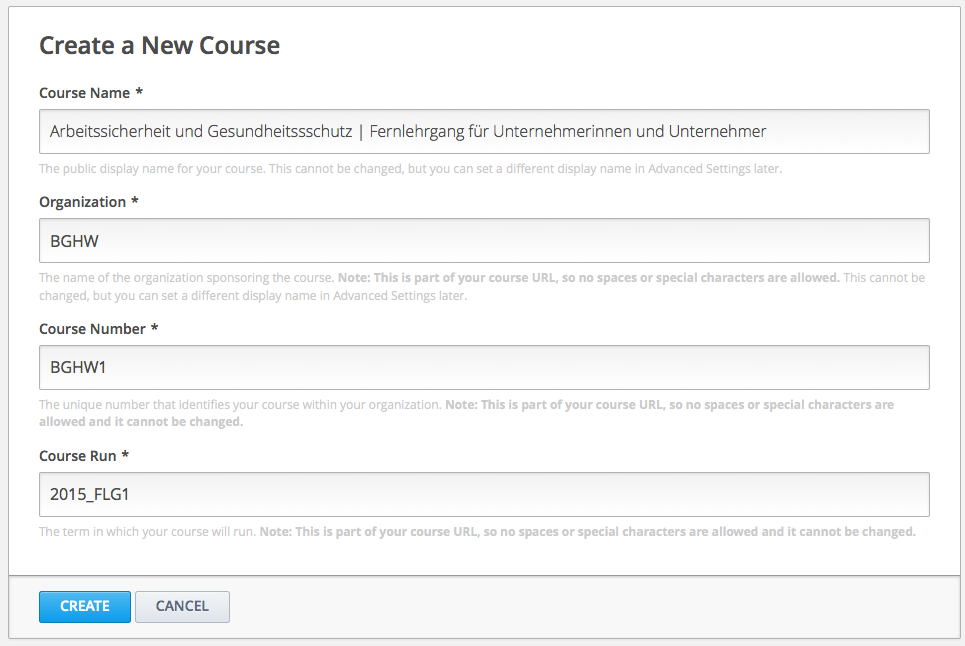

Wie erstellt man einen neuen Kurs?¶
- Ein neuer Kurs lässt sich ganz einfach in vier Schritten erstellen:
- Melden Sie sich bei Studio an.
- Klicken Sie auf die Schaltfläche “Neuer Kurs”
- Geben sie die gewünschten Informationen über den Kurs in die dafür vorgesehenen Felder ein.
Wichtig! Achten Sie auf eine sorgfältige Eingabe der Informationen, da diese mit in die URL (web-Adresse) des Kurses eingebunden werden. Um die URL zu verändern, nachdem der Kurs erstellt wurde, müssen Sie edX über die Hilfe-Seite (http://help.edge.edx.org) kontaktieren. Da die eingegebenen Iformationen Teil der Kurs-URL werden, dürfen in den vier Feldern zusammen maximal 65 Zeichen stehen.
- Kurs Name: Hier geben Sie die genaue Bezeichnung für Ihren Kurs ein. Bespielsweise könnte der Name “Arbeitssicherheit & Gesundheitsschutz” lauten.
- Organisation: Hier geben Sie Organisation an, von welcher aus dieser Kurs erstellt wird. Beispielsweise eine Universität oder Berufsgenossenschaft.
- Kurs Nummer: Hier geben Sie eine Buchstaben-Abkürzung für den im Kurs behandelten Sachverhalt sowie eine Nummer an. Zum Beispiel könnte die Kursnummer für “Arbeitssicherheit & Gesundheitsschutz” ASGS1 lauten.
- Zeitraum: Hier geben Sie den Zeitraum in welchem der Kurs statt finden soll in abgekürzter Form an. Für das zweite Semester 2014 könnte es bespielsweise T2_2014 lauten. Der eingegebene Zeitraum nimmt keinen Einfluss auf den tatsächlich von Ihnen festgelegten Starttermin.
Bemerkung
Wichtig! Falls Sie den Kurs weltweit öffentlich zugänglich machen möchten, achten sie darauf ein “x” in die Kursnummer einzufügen.
- Klicken Sie auf “Speichern”